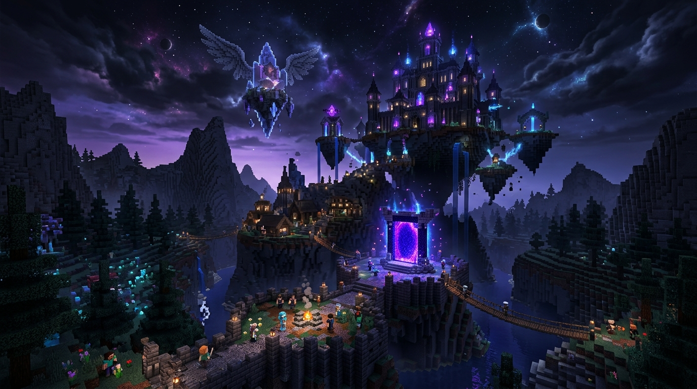

¿Quiénes somos?
Sentey Tellus nació en el año 2024 como un pequeño grupo de amigos apasionados por los videojuegos y la tecnología. Lo que empezó como un hobby, rápidamente se convirtió en algo más grande.
Nuestro primer gran proyecto fue Angels Wans, un servidor de Minecraft multijugador que creamos para nuestra comunidad. La idea era simple: crear un espacio donde todos pudieran jugar, divertirse y ser parte de algo especial.
Hoy, seguimos creciendo y trabajando en nuevos proyectos, siempre con el mismo objetivo: crear experiencias únicas para nuestra comunidad gamer.

Angels Wans
Servidor de Minecraft multijugador. ¡Conectate y jugá!